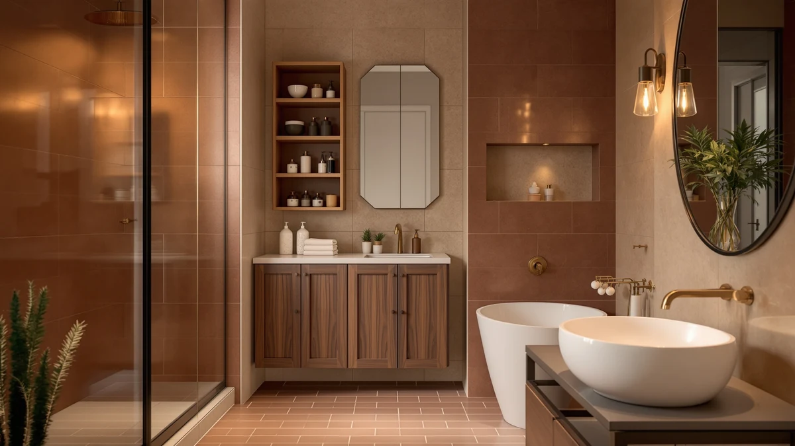

The Best Under-sink Organizers Under $100 (2026)
Prices and picks verified as of September 2026. Independent, reader-supported reviews.


Quick Answer
For most bathrooms, the Simple Houseware 2 Tier Pull-Out is the best under-sink organizer under $100 because its two sliding tiers and adjustable divider work around a center drain pipe without crowding the cabinet. If you have a pedestal sink with no cabinet at all, the LOKO 24-inch Pedestal Sink Storage is worth the extra cost instead.
Our pick: Simple Houseware 2 Tier Pull-Out — $23.97 Check Price on Amazon
Bottom line: our top pick is the Simple Houseware 2 Tier Pull-Out Sliding Drawer Under Sink at $24.47. The best budget option is the Pensino 2 Pack Adhesive Cabinet Door Organizer Storage Caddy at $12.99.
Things to Know Before You Buy
- Measure your drain pipe before you shop. A center pipe rules out wide, one-piece organizers and favors L-shaped or split designs instead.
- Pull-out drawers beat static shelves in deep cabinets. Sliding tiers let you reach items at the back without kneeling on the floor.
- Pedestal and wall-mounted sinks need a different category entirely. Look for a cutout cabinet built around the plumbing instead of a bin that assumes a floor.
- Metal and coated finishes hold up better than bare wood. Every pick on this list of the best under-sink organizers under $100 uses metal, chrome, or moisture-resistant construction.
- You can solve most cabinets for well under $100. Prices here run from $12.99 to $64.99, and the top pick costs $23.97.
The best under-sink organizers under $100 turn a cabinet full of tangled cleaning bottles and loose sponges into a space you can actually find things in. The area below a bathroom sink fights you at every turn: a drain pipe runs through the middle, the floor is rarely flat, and anything you set down disappears behind the plumbing within a week.
You do not need a full cabinet remodel to fix this. A good organizer works around your drain pipe, keeps bottles upright instead of tipping into a heap, and costs a fraction of what a plumber or carpenter would charge to rebuild the cabinet. Our top pick, the Simple Houseware 2 Tier Pull-Out at $23.97, does exactly that for most standard vanities.
Below you will find seven organizers we researched and compared, ranging from a $12.99 door-mounted rack to a $64.99 pedestal-sink cabinet. We sorted them by the cabinet problem each one solves best: the center drain pipe, the pedestal sink with no cabinet at all, loose trash bag rolls, and the cabinet that might need more storage later. Prices reflect Amazon listings as of August 2026.
Why You Should Trust Us
I am Ilane Tall, and I cover bathroom storage and organization for Best Bathroom Storage. Cramped, awkward cabinets are the problem readers write to me about most, whether it is a center drain pipe eating the usable floor space or a pedestal sink with no cabinet to speak of. I have spent years working through those layouts in my own home and in bathrooms I have helped friends and family set up.
To build this guide to the best under-sink organizers under $100, I compared the specs, dimensions, materials, and verified buyer feedback for every product you see here against the cabinet layouts they actually have to fit. I weighed how each one handles plumbing, moisture, and price against what you get for it. I do not run a fake testing lab or quote experts who do not exist. When a pick has a real drawback, I name it.
How We Picked
We started with a simple ceiling: every organizer on this list of the best under-sink organizers under $100 had to sell for less than $100 on the live Amazon listing, not an inflated reference price that drops the moment you check out. That kept the comparison honest across a wide range of designs.
From there we screened for three things. First, plumbing tolerance: we favored designs that work around a center drain pipe, whether through an L-shaped cutout, a split pack, or a cabinet built around the plumbing itself. Second, moisture resistance: we kept metal, chrome, and coated builds and set aside anything made of bare wood or cardboard. Third, a specific job done well, rather than a vague promise to organize everything. We also read through verified buyer reviews to flag recurring complaints about wobbly rails or adhesive that lets go.
How We Compared
We evaluated each under-sink organizer against the cabinet conditions it has to survive. We checked the stated dimensions against a standard 24-inch vanity with a center drain pipe, so we could tell which picks clear the plumbing and which only suit a back-wall layout or a pedestal sink with no cabinet at all. We looked at how each pull-out mechanism is described, including guide rails and limit stops, to gauge how it handles a fully loaded tray.
We also compared the claims that matter most at this price. We weighed the metal and plastic each unit uses, since that decides how it holds up to a damp cabinet floor. We compared pack counts and bin sizes to work out the real cost per usable compartment, and we cross-checked every spec, material, and price against the product listings and verified owner feedback. None of these picks earns a numeric score from us. Each one earns its spot among the best under-sink organizers under $100 by fitting a specific cabinet and a specific problem.
Our Picks

Simple Houseware 2 Tier Pull-Out
What we like
- Two tiers slide out together on one pull, so nothing hides at the back
- Divider moves anywhere along the tray or lifts out completely for one open bin
- Both baskets lift free of the frame for quick refills at the sink
Flaws but not dealbreakers
- At 8.3 inches wide, it does not clear a center drain pipe on its own
- Two tiers stacked at 9.8 inches high can crowd a shallow cabinet
| Material | Metal / wood |
| Size | 14.4" L x 8.3" W x 9.8" H |
The Simple Houseware 2 Tier Pull-Out tops our list of the best under-sink organizers under $100 because it solves the two problems that trip up most buyers: reach and sorting. At 14.4 inches long, 8.3 inches wide, and 9.8 inches tall, the frame holds two full tiers that slide forward together, so you are not digging past the front row of bottles to find what sits behind them. A single divider runs the length of the tray and moves to any position you want, or comes out entirely if you would rather run one open basket instead of two sections. Both baskets also lift free of the frame on their own, which matters more than it sounds. Instead of unloading a drawer bottle by bottle to wipe it down, you carry the whole basket to the sink, rinse it, and set it back in place.
At $23.97, it costs more than the cheapest picks on this list but less than half of what the pricier cabinet-style organizers here run. The trade-off shows up in width. At 8.3 inches, the frame is narrow enough to sit beside a center drain pipe but not wide enough to straddle one, so measure the clear space on either side of your pipe before you order. Stacked at 9.8 inches, the two tiers can also feel tight in a shallow cabinet with a low shutoff valve. Neither issue changes the recommendation for most bathrooms. If your cabinet has room on one side of the plumbing, this pull-out gives you the most usable, adjustable storage per dollar on this list.

Pensino 2 Pack Adhesive Cabinet
What we like
- Mounts to the inside of the cabinet door with adhesive backing, no drilling
- Two racks in the pack double your storage without touching the cabinet floor
- Frees up the floor of the cabinet entirely for taller bottles and bins
Flaws but not dealbreakers
- Built for holding lids and small items, not heavy cleaning bottles
- Adhesive mounts can loosen over time on textured or painted doors
| Material | Metal / wood |
| Size | — |
The Pensino 2 Pack Adhesive Cabinet is our runner-up among the best under-sink organizers under $100 because it adds storage without touching the cabinet floor at all. Each rack sticks to the inside of a cabinet door with an adhesive backing, so there is no drilling and no measuring around the drain pipe. The pack includes two racks, enough to line both doors of a standard two-door vanity or stack extra capacity on a single door. The racks hold lids, small bottles, sponges, and scrub brushes upright and out of the way, which clears floor space below for the bulkier items that will not fit anywhere else.
At $12.99 for the pair, it is the least expensive pick on this list, and it pairs well with a floor-based organizer rather than replacing one outright. The trade-off is capacity and weight limits. These racks hold lids and small containers well, but a heavy bottle of bleach or a gallon jug will strain the adhesive mount over time, especially on a textured or freshly painted door. On a smooth, clean door, most owners report the mounts hold for months without shifting. Use it for the small stuff and let a floor organizer handle the heavier bottles, and you get real extra storage for under $13.

LOKO 24-inch Pedestal Sink Storage
What we like
- Full cabinet with two doors hides everything behind closed panels, not open bins
- U-shaped cutout wraps around the plumbing on wall-mounted pedestal sinks
- Two enclosed compartments separate towels and toiletries from cleaning supplies
Flaws but not dealbreakers
- At $64.99, it costs more than double most other picks on this list
- Only fits wall-mounted drainage sinks, not floor-mounted plumbing
| Material | Metal / wood |
| Size | 23.5 x 12 x 24 inches |
The LOKO 24-inch Pedestal Sink Storage earns a spot among the best under-sink organizers under $100 by solving a problem the other picks here cannot: it works when you do not have a cabinet at all. Pedestal and wall-mounted sinks leave the plumbing exposed, and this unit closes that gap with a full cabinet built around a 7.87 by 5.91 inch U-shaped cutout that fits around the drain and supply lines. Two doors open onto two separate compartments, so towels and toiletries stay apart from cleaning supplies instead of piling into one open bin. At 23.5 by 12 by 24 inches, it is by far the largest organizer on this list.
At $64.99, it is also the most expensive pick here, more than double the cost of most of the others on this list of the best under-sink organizers under $100. That price buys real capacity and a finished look you do not get from open bins, which matters if your pedestal sink sits in a visible spot rather than tucked away. The cutout only fits wall-mounted drainage, so it will not work under a standard floor-mounted cabinet sink, and LOKO is explicit that you should measure your plumbing before ordering. For anyone with a pedestal or wall-mounted sink and no other storage option nearby, the price is easy to justify.

STWWO 2-Pack Trash Bag Holder
What we like
- Two sizes in one pack cover both extra-large and standard trash bag rolls
- Metal construction with a lid that keeps the roll contained and dust-free
- Solves a specific mess that other organizers on this list ignore
Flaws but not dealbreakers
- Built for one job only, so it will not organize bottles or cleaning supplies
- The XL size still needs 10.6 by 6.7 inches of clear cabinet space
| Material | Metal / wood |
| Size | 2 Pack-XL & L |
The STWWO 2-Pack Trash Bag Holder is our budget pick for a narrower reason than the other entries on this list of the best under-sink organizers under $100: it fixes one specific mess instead of trying to organize the whole cabinet. Loose rolls of trash bags tend to unravel and slide around the cabinet floor, and this metal holder keeps a roll contained under a hinged lid so you can tear off one bag without the rest spilling out. The pack includes two sizes, an extra-large holder at 10.6 by 6.5 by 6.7 inches and a standard holder at 10 by 6 by 6 inches, which covers most trash bag brands and box sizes.
At $29.69 for the pair, it costs more than some of the general-purpose organizers on this list, so it earns the budget label on value rather than sticker price: you are paying for a problem it solves completely, not a fraction of one. It will not hold cleaning sprays or toiletries, so most buyers pair it with a bin or pull-out drawer for everything else under the sink. If loose trash bags rolling around the cabinet floor is your specific complaint, this is the cheapest full fix on this list. If you need general storage too, treat it as an add-on rather than your only purchase.

JYSMYWS 3 Pack Under Sink
What we like
- Three separate bins instead of the two you get with most competitors
- Each bin includes a hanging cup for sponges, brushes, or small toiletries
- Small footprint per bin makes it easy to arrange around a drain pipe
Flaws but not dealbreakers
- Individual bins are smaller than a single large organizer
- Hanging cups add a small amount of bulk to each bin's footprint
| Material | Metal / wood |
| Size | 3 Pack |
The JYSMYWS 3 Pack Under Sink stands out on this list of the best under-sink organizers under $100 for a simple reason: you get three bins instead of the two that most competing packs include. Each bin comes with its own hanging cup attachment built in, giving you a spot for a sponge, a scrub brush, or a small bottle without dedicating a whole bin to it. Because the bins are separate and compact, you can arrange all three around a center drain pipe instead of hunting for one unit wide enough to straddle it, which is the exact problem that trips up single-piece organizers in a lot of bathroom cabinets.
At $15.98 for three bins, it lands near the bottom of the price range on this list and gives you more individual pieces per dollar than any other pick here. The trade-off is scale: each bin is smaller than the tiers on the Simple Houseware or the drawers on the Delamu, so it suits smaller items better than bulky cleaning jugs. The hanging cups also add a bit of width to each bin, worth accounting for if your cabinet is already tight. For a cabinet with an awkward pipe layout and mostly small items to store, three flexible bins beat one rigid organizer that might not fit at all.

DecoBrothers Stackable Under Sink Organizer
What we like
- Sliding basket pulls forward for access without lifting the whole unit
- Stacks with a second set if you need more capacity later
- Chrome-plated metal frame assembles without drilling or power tools
Flaws but not dealbreakers
- At 16.7 by 10.8 by 10.2 inches, it needs a fairly wide clear span
- Stacking two sets for more capacity means buying the organizer twice
| Material | Metal / wood |
| Size | 16.7 x 10.8 x 10.2 inches |
The DecoBrothers Stackable Under Sink Organizer earns its place among the best under-sink organizers under $100 by planning ahead for cabinets that might need more room later. The base unit measures 16.7 by 10.8 by 10.2 inches and holds a sliding basket that pulls forward on its own, so you reach items at the back without lifting the entire tray out of the cabinet. Assembly skips tools entirely. The chrome-plated metal frame snaps together by hand, which matters if you would rather spend ten minutes setting it up than wrestling with a drill under a low cabinet ceiling.
At $26.87, it sits in the middle of the price range on this list, and the stackable design is the real selling point if your storage needs grow. Buy a second set and stack it on top of the first for double the capacity in the same footprint, though that does mean paying for the organizer twice rather than getting a taller unit in one purchase. The 16.7-inch width also asks for a fairly open cabinet floor, so it fits best in a vanity where the drain pipe sits off to one side rather than dead center. For anyone who wants room to expand without buying an entirely new system, it is one of the more practical picks here.

Delamu Under Sink Organizer 2
What we like
- L-shaped frame wraps around a drain pipe instead of blocking it
- Both tiers pull out on guide rails, with limit stops to keep them from tipping
- Pack of two lets you outfit both sides of a wide cabinet
Flaws but not dealbreakers
- At $39.99, it costs more than most single-unit organizers on this list
- The L-shaped cutout only helps if your pipe sits in the right spot for it
| Material | Metal / wood |
| Size | 2-Pack |
The Delamu Under Sink Organizer 2 makes this list of the best under-sink organizers under $100 on the strength of its L-shaped frame, built specifically to work around a drain pipe and garbage disposal instead of ignoring them. Both tiers slide out on guide rails rated smooth and quiet enough that you will not wince every time you pull one open, and each tier has a limit stop that keeps it from sliding all the way out and tipping when it is fully loaded. The pack includes two units, so you can outfit both sides of a wider cabinet or run one now and add the second later.
At $39.99 for the pack, it costs more than most single-unit organizers here, though you are buying two pull-out systems rather than one. The L-shaped cutout is the main reason to choose it over a rectangular organizer, but that only pays off if your drain pipe actually sits in a spot the L-shape can wrap around. Measure the pipe's position before you buy, since a centered pipe with equal space on both sides may suit a different pick on this list better. For a cabinet with an off-center pipe and a garbage disposal or extra plumbing to route around, this is the most purpose-built option here.
Quick Comparison
Here is how all seven of the best under-sink organizers under $100 stack up on material, price, and what each one is built to solve.
| Product | Material | Price | Rating | Best for | Get it |
|---|---|---|---|---|---|
| Simple Houseware 2 Tier Pull-Out | Metal / wood | $23.97 | 4 | Adjustable pull-out tiers | View on Amazon → |
| Pensino 2 Pack Adhesive Cabinet | Metal / wood | $12.99 | 4 | Door-mounted extra storage | View on Amazon → |
| LOKO 24-inch Pedestal Sink Storage | Metal / wood | $64.99 | 4 | Pedestal / wall-mounted sinks | View on Amazon → |
| STWWO 2-Pack Trash Bag Holder | Metal / wood | $29.69 | 4 | Corralling trash bag rolls | View on Amazon → |
| JYSMYWS 3 Pack Under Sink | Metal / wood | $15.98 | 4 | Three-bin configurations | View on Amazon → |
| DecoBrothers Stackable Under Sink Organizer | Metal / wood | $26.87 | 4 | Stacking in shallow cabinets | View on Amazon → |
| Delamu Under Sink Organizer 2 | Metal / wood | $39.99 | 4 | Clearing a center drain pipe | View on Amazon → |
How do I pick an under-sink organizer that works around a center drain pipe?
Measure the clear space on each side of the pipe and the height to the bottom of the P-trap before you shop.
What should I buy if I have a pedestal or wall-mounted sink with no cabinet?
Look for a cutout cabinet built specifically for exposed plumbing rather than a bin meant for a standard vanity floor.
The Competition
We looked at more organizers than the seven that made this list of the best under-sink organizers under $100, and a few common types did not earn a spot. Single-piece molded shelves came up often, but most assume the drain pipe runs along the back wall of the cabinet. In a vanity with a center pipe, a rigid one-piece shelf simply will not sit flat, so we set those aside.
We also passed on expandable tension-rod shelves. They look clever in photos, but the ones we researched rely on a single bar that bows under the weight of a detergent jug, and owners report items sliding off once the rod shifts. Bamboo and unfinished wood racks were tempting for the look, but bare wood and a damp cabinet floor are a bad combination, and we did not want to recommend something that swells or stains after a small leak. We skipped ultra-cheap single bins under $10 for a similar reason: you typically need two or three of them to match the capacity of one pick on this list, which erases the savings.
After weighing all of it, the Simple Houseware 2 Tier Pull-Out remains our pick for the best under-sink organizers under $100, because its adjustable, sliding design fits the widest range of cabinets without asking you to spend anywhere near the full budget.